| Este Software es muy versátil, por lo cual se
le pueden dar muchos usos, uno de ellos podría ser por
ejemplo: Partir un archivo de tu ordenador en la cantidad de bytes
que desees, con el fin de transportarlo de un lugar a otro en
Discos flexibles de 1.4 MB, pero si tu aparte de eso requieres
tener una protección extra para la información que
estas transportando, puedes aplicar un camuflaje a estas
particiones, y así las harás pasar por otros
archivos sin que nadie lo note.
Para iniciar este proceso primero tienes que
presionar el botón: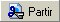 ,
posteriormente
te pedirá que introduzcas el Archivo Origen
este archivo es el que tienes pensado particiónar a
camuflajear.
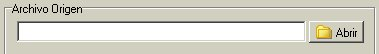
Para elegir este archivo solo presiona en el botón
Abrir como el que se muestra en la figura anterior. Te
aparecerá una ventana donde podrás buscar dicho
archivo en tu ordenador, una vez que lo hayas seleccionado se
mostrara como lo indica la siguiente figura.
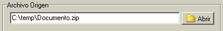
Para continuar con el siguiente paso pulsamos el botón
 que se encuentra en la parte inferior del programa.
Luego aparecerá la ventana que se muestra en la figura
siguiente. que se encuentra en la parte inferior del programa.
Luego aparecerá la ventana que se muestra en la figura
siguiente.
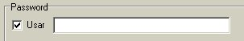
Aquí podrás poner un password de
seguridad para que solo puedan unir los archivos mediante el
password que tu decidas. Para poder usar el password solo marca la
casilla Usar, y teclea en la caja de enseguida el password
que decidas, si no usas el password no hay problema. Enseguida
pulsa nuevamente el botón .
Ahora toca el turno de decidir si vamos a querer
partir o no el archivo, y en caso de que así sea solo tiene
que dejar marcada la casilla Partir Archivo, como se
muestra en la siguiente figura.
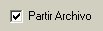
Ahora tenemos que decidir si partiremos el archivo
en particiones fijas o aleatorias, eso lo decidimos mediante la
caja Tipo de Partición, si la dejamos en Fijas
tendremos que especificar el tamaño en Bytes deseado para
cada partición en la caja inferior de la figura siguiente.
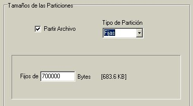
En dado caso
que hayamos decidido elegir que el Tipo de Partición
sean Aleatorias tendremos que especificar los rangos en los
que queremos que los tamaños de las particiones se generen
como se muestra en la siguiente figura.
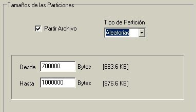
En caso de que no desees partir el archivo, y
que tu único propósito sea camuflajearlo, deja sin
marcar la caja Partir Archivo.
Para continuar pulsamos el botón
,
con esto
pasamos a la sección de Formato de Nombres de las
Particiones. En la caja Tipo de Nombre, si la dejamos
con la opción Base, le estaremos diciendo al
programa que las particiones que nos generen serán de la
siguiente manera:
Nombre Base de las Particiones + Numero de la Partición
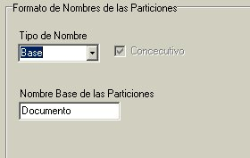
En la Caja Nombre
Base de las Particiones podremos poner el nombre que queramos
que aparezca antes de la numeración de los archivos, el
programa automáticamente tiene el nombre del archivo que se
esta partiendo pero si gustas, lo puedes cambiar sin ningún
problema.
En caso de
que en la caja Tipo de Nombre, elijas Aleatorio,
el programa nos generara las particiones con nombres de 8 dígitos
aleatorios, y si marcas la casilla de Consecutivo los
archivos tendrán una numeración aparte de estos 8 dígitos
aleatorios, de lo contrario no estarán seriados.
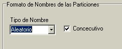
Ahora pulsamos el botón
,
con esto
pasamos a la sección de los Archivos del Camuflaje,
aquí primeramente decidimos, si queremos o no camuflajear
las particiones, esto lo hacemos marcando la casilla Usar
Pieles.
¿Que
son las Pieles:? Las
Pieles son los archivos que serán incrustados a las
particiones que generara el kamaleon, con el fin de confundir a
las particiones con las pieles elegidas. Las pieles pueden ser cualquier
tipo de archivo o de cualquier tamaño, pero se
recomienda que las pieles sean archivos con poco tamaño
para optimizar espacio, el kamaleon trae incluido un directorio de
pieles, las cueles usted decide usarlas o no, o usar otras.
Posteriormente
elegimos los archivos que nos servirán para camuflajear las
particiones, podemos cambiar al directorio que deseemos mediante
el botón Cambiar Directorio...
Al lado
derecho se mostraran los archivos que se encuentran en el
directorio que hayamos seleccionado, cada uno cuenta con una
casilla donde podemos marcar si lo queremos usar o no como piel
del camuflaje, todo esto se puede apreciar en la figura siguiente:
. 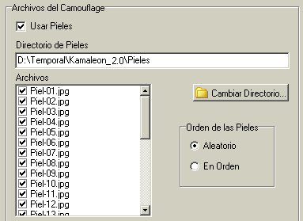
Además
tenemos la opción Orden de las pieles aquí
podremos elegir si las pieles serán tomadas para su uso de
forma Aleatoria o En Orden como se muestran en el
directorio donde se encuentran.
Una vez seleccionadas estas opciones pulsamos el botón
,
y pasamos al
ultimo paso que es el del Directorio Destino. Aquí lógicamente
elegimos en que directorio queremos que nos arroje el kamaleon las
particiones, y podemos cambiar este directorio mediante el botón
Cambiar Directorio... como se muestra en la siguiente
figura.
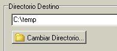
Finalmente pulsamos el botón de
 ,
con esto veremos
unas barras de estado, que nos mostraran el progreso del kamaleon
partiendo y/o camuflajeando los archivos, y guardándolos en
su ordenador. ,
con esto veremos
unas barras de estado, que nos mostraran el progreso del kamaleon
partiendo y/o camuflajeando los archivos, y guardándolos en
su ordenador.
|